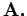
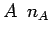

Inhalt Index DeskTop Bronstein

 Wahrscheinlichkeitsrechnung und Mathematische Statistik Wahrscheinlichkeitsrechnung Ereignisse, Häufigkeiten und Wahrscheinlichkeiten Häufigkeiten und Wahrscheinlichkeiten
Wahrscheinlichkeitsrechnung und Mathematische Statistik Wahrscheinlichkeitsrechnung Ereignisse, Häufigkeiten und Wahrscheinlichkeiten Häufigkeiten und Wahrscheinlichkeiten


Es sei A ein Ereignis der zu einem Versuch gehörenden Ereignismenge  Tritt bei n-maliger Wiederholung des Versuches das Ereignis -mal ein, so heißt nA die Häufigkeit, nA/n = hA die relative Häufigkeit des Ereignisses A. Die relative Häufigkeit genügt gewissen einfachen Gesetzmäßigkeiten, die man als Grundlage für eine axiomatische Definition des Begriffes Wahrscheinlichkeit P(A) des Ereignisses A in der Ereignismenge  benutzt. (Der Buchstabe P steht für ,,probability``, das englische Wort für Wahrscheinlichkeit.)
benutzt. (Der Buchstabe P steht für ,,probability``, das englische Wort für Wahrscheinlichkeit.)